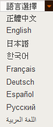

返回主页
语言和文化冲突

和而不同。天下大同。
德语的发展历史和外语学习方法
Sochi 2014: Winter Olympics opening ceremony（索契冬奥会上俄罗斯的荣誉）
要找到好的翻译不容易。英语的还好，自己可以读。但德语或法语呢？原复旦大学法学院院长王沪宁早年就读英语或法语的原版电影图书和报刊杂志，比如法国的《自然科学》、《研究》等。网络没有王沪宁家庭身世的介绍。但文革可以“病假”不下乡在家自学而后在上海进工厂学徒，1974年19岁被作为“工农兵学员”推荐到华东师范大学西语系（上海师范大学干校外语培训班）学习法语。普通人显然没这个机会的。家教好，自己努力，悟性（insight/taste）高。93年大专辩论推出蒋昌建，王沪宁理论正好满足当局需求。王沪宁现在号称第一智谋，常陪老板左右。外媒不了解中国，妄称其为政治化妆师（spin doctor）或中国新保守主义教父，将“卡尔 罗夫（Karl Rove）和亨利 基辛格（Henry Kissinger）集于一身。没人敢说像Goebbels或戴季陶或陈布雷，呵呵。
北京大学法学院院长朱苏力2001年组织翻译《波斯纳（Richard A. Posner）文丛》，虽竭尽全力也难尽其责。
33岁 1973 Economic Analysis of Law, 1st ed.
50岁1999《法理学问题》（重译本）The Problems of Jurisprudence
55岁1995《超越法律》Overcoming Law
60岁1999《法律和道德理论的问题》 道德和法律理论的疑问The Problematics of Moral and Legal Theory
version:1.0; jobnet@188.com © retter2012.com